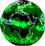
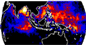

Snow Depth from SSMR
The data set consists of 1° x 1° gridded global monthly averaged snow depths derived from the
Nimbus-7 Scanning Multichannel Microwave Radiometer (SMMR) 0.5° x 0.5° gridded snow depth data.
The SMMR sensor was placed in an alternate-day operating pattern on 19 November 1978 due to spacecraft
power limitations, providing complete global coverage every six days. Regions poleward of 72° have
complete coverage for each day the sensor was recording data. The SMMR data spans over the period
from 1978 through 1987.
The algorithm used to retrieve snow depth on a global scale using the remotely sensed microwave signals
has been developed by a group of NASA scientists (Chang et al., 1976
, 1982a, 1987,
1990, 1992; Foster et al., 1984; Hall et al., 1982).
Data are placed into 0.5° latitude x 0.5° longitude grid cells. SMMR data were interpolated for
spatial and temporal gaps. Overlapping data in a cell from separate orbits within the same six-day period
are averaged to give a single brightness temperature, assumed to be at the centre of the cell. Maps
are based on six-day average brightness temperature data from the middle week of each month. Oceans
and bays are masked so that only microwave data for land areas are distinct.
Comparisons of SMMR snow maps with previous maps produced by NOAA/NESDIS and US Air Force Global Weather
Center indicate that the total snow derived from SMMR is usually about ten percent less than that
measured by the earlier products, because passive microwave sensors often cannot detect shallow dry
snow less than about 5 cm deep. SMMR snow depth results are especially good for uniform snow covered
areas such as the Canadian high plains and Russian steppes. Heavily forested and mountainous areas
tend to mask the microwave snow signatures, and SMMR snow depth derivations are poorer in those areas.
This snow depth data set supports climate modelling, snow melt run-off, and other geophysical studies
(Hall 1988, Hall and Martinec,
1985; Schmugge 1980a & b).
In the Northern Hemisphere, the mean monthly snow cover ranges from about 7% to over 40%
of the land area, thus making snow the most rapidly varying natural surface feature. The mean monthly
snow storage (excluding Greenland) ranges from about 1.5 x 1016 g in summer to about 300 x
1016 g in winter. Snow cover is a sensitive indicator of climate change, with the position of
the southern boundary of snow cover in the Northern Hemisphere of particular significance as it is likely
to retreat northward because of sustained climate warming (Barry, 1984;
Foster 1989).
General Circulation Models (GCMs) also suggest that the amount of snowfall by latitude may change
because of changes in atmospheric moisture flux with a decrease in the frequency and occurrence of
snowfall in the low and middle latitudes and an increase in the high latitudes (Barry, 1985).
Energy balance studies of the Earth-atmosphere system using satellite observations indicate a net
radiative energy gain between the equator and 35° latitude and a net radiative energy loss
poleward of this latitude. The Arctic region is influenced by the energetic subpolar systems
transporting heat and momentum into the region and it, in turn, influences the general circulation
of the atmosphere by being a heat sink for the global weather machine (Vowinckel and Orvig, 1970). For a better understanding of the heat transfer
between the atmosphere, the snowpack, and the ground, snow depth and snow extent must be known.
Satellite snow cover records are presently too short to determine definite trends. Continued monitoring
will be needed to define snow accumulation and depletion patterns, and to detect correlations between
snow cover and large-scale circulation patterns.
Sea Ice Concentration from SSMR and SSM/I
Sea ice plays an important role in the global climate system. It serves as an effective insulator
between the ocean and the atmosphere, restricting exchanges of heat, mass momentum, and chemical
constituents. Multi-channel passive microwave radiance measurements made from number of satellites
are used to map, monitor and study the Arctic and Antarctic polar sea ice covers
(Cavalieri et al., 1997).
The monthly averaged sea ice concentration data set presented is generated from the brightness temperature
observations made by four different space borne microwave imagers. The data set spans over 18 years (1978-1996),
starting with the Scanning Multichannel Microwave Radiometer (SMMR) on NASA Nimbus 7 in 1978 and continuing
with the Defense Meteorological Satellite Program (DMSP) Special Sensor Micro-wave/Imager (SSM/I)
series beginning in 1987. The original sea ice dataset was on a polar stereographic projection with grid
elements of approximately 25 x 25 km. It was then resampled to a 1° x 1° grid.
Global Rain Gauge Analysis from GPCC
Precipitation data are main input to global hydrological cycles and climate models. The conventional
rain-gauge measurements are the only direct measure of rain-fall. This dataset is comprised of monthly
gridded area-mean rainfall totals for the period January 1986 to March 1999 on a 1° x 1° global
grid.
The original precipitation data set has been produced at Global Precipitation Climatology Centre
(GPCC), in an effort to provide global data
sets of area-averaged and time-integrated precipitation fields based on surface rain gauge measurements.
The GPCC collects monthly precipitation totals received from CLIMAT and SYNOP reports via the World Weather
Watch GTS (Global Telecommunication System) of the World Meteorological Organisation (WMO). The GPCC also acquires monthly precipitation data from
international and national meteorological and hydrological services and institutions. An interim
database of about 6700 meteorological stations is defined. Surface rain-gauge based monthly precipitation
data from these stations are analysed over land areas and a gridded dataset is created
(Rudolf, 1996; Rudolf et. al.
1994; and Rudolf, 1993), using a spatial objective analysis
method.
GPCC is operated by the Deutscher Wetterdienst (National Meteorological Service of Germany) as a contribution
to international climate observation and research activities. The Centre participates in international
programs and projects such as GEWEX and ACSYS of the World Climate Research Programme, WCP-Water and in the
development of GCOS. It is member of the GEWEX Hydrometeorology Panel and a component of the Global
Precipitation Climatology Project (GPCP).
The main purpose of the GPCP (for details see WCRP, 1990; WMO, 1985; WMO/ICSU, 1990) is to
evaluate and provide global gridded data sets of monthly precipitation based on all suitable observation
techniques as a basis for:
Global Land and Ocean
Precipitation Analysis from GPCP
This global precipitation dataset is a merged analysis incorporating precipitation estimates from
low-orbit-satellite microwave data, geosynchronous-orbit satellite infrared data, and rain gauge
observations (Huffman et al., 1997). The dataset is comprised of monthly gridded area-mean rainfall totals and error estimates,
for the period covering July 1987 to March 1999. For consistency with the other datasets in the Goddard
DAAC's Climate Interdisciplinary Data Collection (CIDC), the original 2.5° x 2.5° gridded
precipitation data received from NOAA National Climate Data Center is regridded to 1° x 1° grid.
The original dataset is formally referred to as the "GPCP Version 1c Combined Precipitation Data Set",
which is often abbreviated to "GPCP Combined Data Set" or "Version 1c Data Set". It has been produced
for the Global Precipitation Climatology Project(GPCP), an international effort organised by
GEWEX/WCRP/WMO to provide an improved long-term precipitation record over the globe (for details see WMO, 1985; and WMO/ICSU, 1990) with the purpose of evaluating and providing global gridded data sets of
monthly precipitation based on all suitable observation techniques as a basis for:
- verification of climate model simulations,
- investigations of the global hydrological cycle and
- climate change detection studies.
Soil Characteristics from FAO
Climate modellers need information on the water holding capacity of global soils. Currently the best
source of this information is the Soil Map of the World, which was produced by the Food and Agriculture
Organisation (FAO) of the United Nations Educational, Scientific, and
Cultural Organisation (UNESCO) in
10 volumes between 1970 and 1978. It provides the most detailed, globally consistent soil data.
Because water holding capacity is not an explicit attribute of the FAO soil map, the data on soil type,
soil texture, soil depth, and average slope that the soil map does provide may be used as surrogates. The
soil texture and soil type data are based on the work by Zobler (1986),
and soil profile depth data was derived by Webb et al. (1993). The average
topographical slope was derived from data sets constructed from the FAO soil map, by the Science and
Application Branch of the EROS Data Center in Sioux Falls, South Dakota. For climate modellers, a 1° x
1° grid of latitude and longitude has been deemed adequate.
Monsoon Rain from SMMR
This study presents a new climatology of monsoon rainfall over the Indian and West Pacific Oceans.
It uses a generalised version of the Wisconsin scheme (Hinton et al.,
1992) to retrieve rain rate from the Pathfinder set of Nimbus-7 Scanning Multichannel Microwave
Radiometer (SMMR) brightness temperatures (Njoku et al., 1995). The
scheme yielded monthly rain rate for open-ocean boxes 1° latitude by 1° longitude from October
1978 through August 1987. There are a total of 104 data months since April, however May and June of
1986 are missing. These rain rates were analysed for structure, behaviour and change. They also were
compared with rain rates measured by gauges for monsoon analysis.